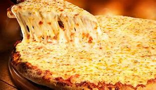
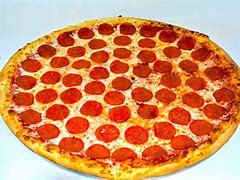

Volte para a página inicial
Alguns tipos de sabores
A variedade de coberturas que se pode colocar sobre a pizza quase infinita, entretanto, algumas preparações são tradiciomais e têm fiéis seguidores:
Marguerita

Mussarela
Portuguesa
Calabresa
Califória

Pepperoni
Quatro quijos
Bacon
 Marguerita
Marguerita  Portuguesa
Portuguesa Calabresa
Calabresa Califória
Califória Quatro quijos
Quatro quijos Bacon Marguerita Portuguesa CalabresaCalifóriaQuatro quijosBacon
Bacon Marguerita Portuguesa CalabresaCalifóriaQuatro quijosBacon